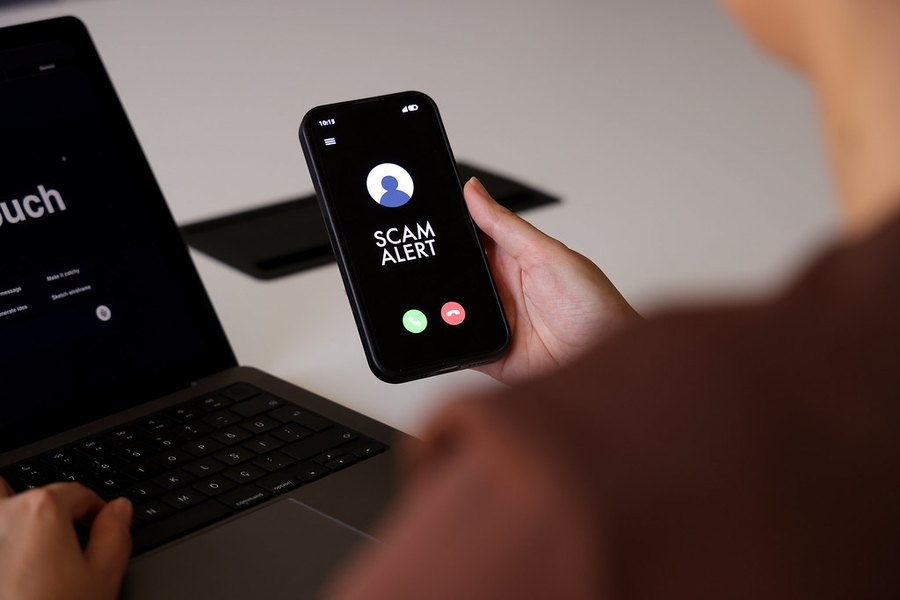

Is Memopezil Legit? How to Judge It Before You Buy
A product can be real while its advertising isn't honest. Here's how to check the parts you can verify yourself, and how to spot the ads and listings to avoid.

Key takeaways
- The product checks out on the points you can verify. Five ingredients with every dose printed, a 60-day money-back guarantee, one-time pricing and an official checkout.
- Much of the advertising doesn't. Our review scored its marketing honesty 4.5 out of 10 and called the typical ad misleading.
- Judge the label, not the ad. An ad that oversells tells you about whoever bought it, not about what's in the capsule.
- Buy only through the official checkout. Marketplace listings are resellers or counterfeits and aren't covered by the guarantee.
- No supplement reverses Alzheimer's or dementia. Any ad claiming that is a red flag, whatever the product.
Is Memopezil legit? On the things a buyer can check, yes. It's a real supplement with a fully printed label, a 60-day money-back guarantee on official orders, and no subscription. The problem is much of its advertising, which overpromises. Buy through the official checkout, ignore miracle claims, and judge it on the label.
We can't audit a company's finances or warehouse from the outside, and we won't pretend otherwise. What we can do is show you how to check the parts that are checkable, which is what our full Memopezil review did with the label, prices and refund terms. This page turns that into a checklist you can run in five minutes.

Memopezil: check today's price
Five ingredients with every dose printed: BCAAs, bacopa, rhodiola, L-theanine and panax ginseng. Two capsules a day, stimulant-free. Sold only on the official site, with a 60-day money-back guarantee.
See the official price →What makes a supplement legit in the first place?
"Legit" gets used to mean two different things, and mixing them up is how people get burned.
The first meaning is: is this a real product that ships, contains what it says, and refunds you if promised? The second is: does it do what the ads claim? A product can pass the first test and fail the second. Plenty of real, properly made supplements are sold with ads that promise far more than any capsule can deliver.
Dietary supplements in the US don't need FDA approval before sale, and the FDA's supplement Q&A explains that manufacturers are responsible for safety and labeling. That puts more of the checking on you. The good news is that the important checks don't take long.
It also helps to separate the seller from the sales channel. A legitimate manufacturer can have its product pushed by third-party advertisers it doesn't fully control. That doesn't excuse misleading ads. It does mean the question "is this ad honest?" and the question "is this product real?" need separate answers, and you can get the second one without trusting the first.
How can you check whether Memopezil is legit?
Run these five checks on Memopezil, or on any supplement you're considering.
| Check | What to look for | How Memopezil does |
|---|---|---|
| Label disclosure | Every ingredient listed with its own milligram amount, no proprietary blends | Passes: all five doses printed (BCAAs 540 mg, bacopa 200 mg, rhodiola 100 mg, L-theanine 100 mg, ginseng 90 mg) |
| Money-back guarantee | A stated window, written terms you can read before paying | Passes: 60 days on official orders, covering full, partly used or empty bottles |
| Contactable seller | A support contact and terms page on the official site | Confirm on the official terms and contact pages before ordering |
| Realistic claims on the label | Support claims, no disease cure claims | Passes on the label; many third-party ads fail |
| Official checkout, clear billing | One-time charge, no hidden auto-ship, prices shown before you pay | Passes: one-time purchase, published pack prices, no subscription |
That's four clear passes and one item to confirm yourself. It's a better result than many products in this category manage, particularly on the label. Most competitors hide their doses in blends, which makes the first check impossible.
Why the label is the strongest signal
A seller hoping to get away with a weak product has every reason to hide the doses. Printing them invites exactly the kind of scrutiny our review applied, and Memopezil doesn't come out of it perfectly. Ginseng and the BCAAs are well below studied amounts. But you can only know that because the numbers are there. Our Memopezil ingredients guide goes through each one.
How other memory brands do on the same checks
Context helps. Alpha Brain has the stronger evidence base, since it funded a trial on its own product, but it splits its ingredients across three proprietary blends, so you can't see individual doses. Focus Factor discloses only part of its formula. Prevagen's single ingredient is printed, but its memory claims drew a lawsuit from the FTC and the New York Attorney General. Our page on Prevagen alternatives covers that case.
And Prevagen, Neuriva and Focus Factor are sold through stores, so their refund terms depend on the retailer. On label disclosure and guarantee length, Memopezil compares well. On published evidence for the finished product, it's level with most of the field: none.
Why do Memopezil ads look like a scam?
Because many of them use a scam-style playbook. Our review gave Memopezil's marketing honesty a 4.5 out of 10 and put it bluntly: the ad you saw was almost certainly a lie, and that has nothing to do with what's in the bottle.
Here's how that happens. Supplements like this are promoted by large affiliate networks, and those networks run the same aggressive template across hundreds of products, good and bad. The person who wrote the ad may never have seen the label. The ad tells you about whoever paid for it. It doesn't tell you what's in the capsule.
Red flags to watch for in any memory supplement ad
- Promises of results in days. The ingredient with the best memory evidence in this formula, bacopa, needs 8 to 12 weeks in trials. Ads that suggest days are selling a timeline the research doesn't support.
- Claims to reverse or cure Alzheimer's or dementia. No over-the-counter product does that, and Memopezil's own label makes no such claim.
- Celebrity or famous-scientist endorsements. Fake news-style pages often borrow well-known names. Treat any celebrity link as false unless the person has said it on their own channels.
- "Secret" or "banned" framing. A real ingredient list isn't a secret, and hiding it is the warning sign.
- Countdown timers and "only 3 left." A product sold in fixed, public packs doesn't run out every afternoon.
- Video that won't let you skip or see a price. A legitimate seller can show you the price and the label up front.
The same rules apply to emails and text messages. A message saying your "order is waiting" or that a "price lock" expires tonight, for something you never ordered, isn't from a seller you want to deal with. Go to the official site yourself rather than clicking through. It takes ten extra seconds and removes most of the risk of landing on a copycat checkout.
None of these red flags means the bottle is fake. They mean the ad isn't a source of information. Skip it and go to the label and terms.
Can you trust Memopezil reviews online?
Not automatically. Our review found that many pages ranking for "Memopezil review" never looked at the label. One widely shared page listed ginkgo biloba, alpha-GPC and phosphatidylserine as ingredients. None of them are in the formula. The same page described a "90-day money-back guarantee" and quoted a Trustpilot score for a product with no Trustpilot profile.
That tells you how a lot of supplement review content is made: generated at volume, with a plausible-looking ingredient list stitched together from what memory products usually contain. When a review gets the label wrong, its rating is decoration.
A thirty-second test works on any review. Does it give a milligram amount for every ingredient? Does its refund window match the seller's own terms page? If either answer is no, the reviewer didn't check the product. For a sense of what real evidence looks like across the category, see our piece on whether memory supplements work.
Is Memopezil on Amazon, and are those listings real?
Memopezil is sold only through its official checkout. It isn't stocked by Amazon, Walmart, CVS or GNC. Any listing you find on a marketplace is a reseller or a counterfeit.
That matters for two reasons. First, you can't verify what's in a counterfeit bottle, or whether a resold one was stored properly. With something you swallow every day, that's a real safety concern. Second, the 60-day money-back guarantee is honored only on official orders. A cheaper marketplace price comes without the refund.
Copycat sites are a related problem. A page can use the product name, a similar bottle photo and a convincing layout while being run by someone else entirely. The checklist below is the quickest way to tell the difference.
How to spot a counterfeit or unofficial listing
- The price is far below the published pack rates, or it's sold as a single bottle.
- The seller name on the marketplace isn't the manufacturer.
- Photos show a different label, a different capsule count, or an ingredient list that doesn't match the five.
- There's no mention of the 60-day guarantee, or the guarantee is a different length.
- Reviews on the listing describe effects or ingredients that aren't part of the formula.
How do you make sure you're on the official checkout?
Start from a source you trust, such as the button on this page or the link in our review, rather than a search ad or a social post from an account you don't know. Then check a few things before entering card details.
- The three packs are 2, 3 and 6 bottles, with prices shown before you pay.
- The order is a one-time charge, with no pre-ticked box for monthly delivery.
- The 60-day guarantee is stated on the order page or in linked terms.
- There's a terms page and a contact method you can read now, not after you buy.
- You receive an order confirmation email with an order number. Keep it.
If something on the page contradicts the above, such as a subscription box, a much lower price, or a different guarantee, stop and go back to the official link. The FTC's guide to buying health products online is a good general reference.
What can't we verify about Memopezil?
Being straight about the limits is part of a fair answer. We can verify the label, the published prices, the guarantee terms and the sales model. Our review also looked through buyer complaints and didn't find clusters of undelivered orders, surprise recurring charges, or refused refunds within the window.
What we can't check from the outside: the inside of the manufacturing facility, the company's finances, or how the business will behave years from now. The product is described as made in a US facility operating to GMP standards, which is the expected baseline, not a seal of excellence. And no clinical trial has tested the finished formula, so "legit" doesn't mean "proven to work."
There's a practical way to cover the gap. Buy a pack size you're comfortable losing if things go wrong, pay by credit card rather than debit or wire, and keep the order confirmation and a screenshot of the guarantee terms. If the company honors the guarantee, you won't need any of it. If it doesn't, you'll have what your card issuer asks for. That approach works for any online supplement, not just this one.
Who should skip Memopezil, legit or not?
- Anyone taking blood thinners, diabetes or thyroid medication, antidepressants or sedatives who hasn't checked with a doctor. Ginseng and rhodiola both interact.
- People who are pregnant or breastfeeding.
- Anyone with sudden or worsening memory changes. That needs a medical evaluation first. Our guide to memory loss versus normal aging explains where the line is.
- Buyers expecting a same-day effect or a dramatic change. The formula is slow and the realistic result is modest.
So, is Memopezil legit? The verdict
As a product, it holds up on every point we could check: open label, real guarantee, clear one-time pricing, and an official checkout. As a marketing operation, a lot of the ads around it are not honest, and our review says so plainly. Keep those two things separate.
If you buy, buy from the official checkout, keep your confirmation, and go in expecting a slow, modest effect over 8 to 12 weeks. If you'd rather compare first, our 2026 memory supplement rankings put it side by side with the alternatives on disclosure, evidence and guarantees.
Memopezil: check today's price
Five ingredients with every dose printed: BCAAs, bacopa, rhodiola, L-theanine and panax ginseng. Two capsules a day, stimulant-free. Sold only on the official site, with a 60-day money-back guarantee.
See the official price →Frequently asked questions
Is Memopezil FDA approved?
No dietary supplement is FDA approved for sale in the US; that approval process applies to drugs. Supplement makers are responsible for safety and accurate labeling. Memopezil is described as made in a US facility operating to Good Manufacturing Practice standards.
Who makes Memopezil?
It's sold direct by the manufacturer through its official checkout and made in a US GMP-standard facility, according to our review. For the company's full name and contact details, check the official terms and contact pages before ordering.
Is Memopezil endorsed by a celebrity or doctor?
We aren't aware of any genuine celebrity or doctor endorsement. Fake news-style ads for memory supplements often borrow famous names without permission, so treat any such claim as false unless the person has made it on their own official channels.
What should I do if I bought from a fake Memopezil site?
Contact your card issuer to dispute the charge, keep any emails and screenshots, and stop taking capsules you can't verify. You can also report the site to the FTC at reportfraud.ftc.gov.
Will Memopezil charge my card every month?
Not on official orders. It's a one-time purchase with no subscription or auto-ship. If a checkout page shows a recurring charge, you're probably not on the official site.
Are bad Memopezil reviews a sign it's a scam?
Not necessarily. The common complaints our review found were that the effect felt subtle or slow, which fits a stimulant-free bacopa formula. Complaints about missing orders or refused refunds would be more worrying, and those weren't found in volume.
Is a product legit if it has a money-back guarantee?
A guarantee helps only if it's honored and you can use it. Check that the terms are written down, that the window is realistic, and that you're buying from the seller who offers it. Marketplace purchases usually aren't covered.
Buying? Use the official checkout
Official orders get the 60-day money-back guarantee and one-time pricing. Marketplace listings don't.
See Memopezil's official price →Related: Memopezil review 2026 · Memopezil ingredients explained · Do memory supplements work? · Prevagen alternatives · Best memory supplements of 2026